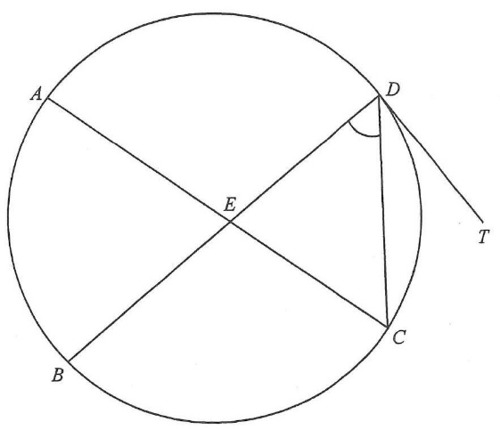

circle & diameter ACchord BDDC, DT (tangent)angle markscentre Opoint E
Question 38. In the figure, \(AC\) is a diameter of the circle.
The point of intersection of \(AC\) and \(BD\) is \(E\). It is given that
\(DT\) is the tangent to the circle at \(D\). If
\(\angle BEC = 96^\circ\) and \(\angle CDT = 41^\circ\), then \(\angle CDE =\)
A. \(35^\circ\)
B. \(41^\circ\)
C. \(43^\circ\)
D. \(47^\circ\)
💡 Hints. (1) An angle in a semi-circle is a right angle — so \(\angle ADC = 90^\circ\).
(2) The angle between a tangent and a chord equals the angle in the alternate segment.
(3) An exterior angle of a triangle equals the sum of the two interior opposite angles.

Figure (original exam diagram)
STEP 1 · Angle in a semi-circle
\(AC\) is a diameter, so the angle subtended by \(AC\) at the circumference is a right angle:
$$\angle ADC = 90^\circ \quad (\angle \text{ in semi-circle})$$
Join \(AD\) to form triangle \(ADC\). On the diagram, \(AD\) is drawn dashed and the right angle at \(D\) is marked in orange.
STEP 2 · Alt. segment theorem
Tangent-Chord (Alternate Segment)\(\angle DAC=\angle CDT\)The tangent \(DT\) and chord \(DC\) give \(\angle DAC=41^\circ\).
\(DT\) is the tangent at \(D\) and \(DC\) is a chord. By the alternate segment theorem:
Since \(DCE\) is the same angle as \(DCA=\angle ACD = 49^\circ\):
$$\angle CDE + 49^\circ = 96^\circ$$
$$\angle CDE = 47^\circ$$
Answer: \(\angle CDE = 47^\circ\) → Option D
PRACTICESimilar question — try it yourself
Question. \(AC\) is a diameter of a circle and \(BD\) meets \(AC\) at \(E\). \(DT\) is the tangent at \(D\). If \(\angle BEC=104^\circ\) and \(\angle CDT=35^\circ\), find \(\angle CDE\).